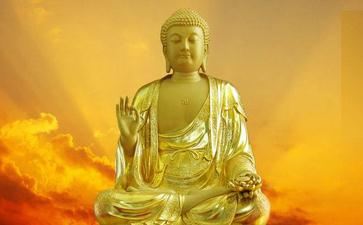

云何绮语？谓于他人，以染污心，
增饰其非，对彼而说。
云何两舌？于他所有，隐密等事，
以非理言，而作离间。
云何恶语？谓于贪欲，和合事相，
以杂染言，厉声而说。
―摘自《十不善业道经》
◎盲目：为何有些人在今生会盲目？（果）
损伤―因为他们在过去世隐瞒事实，误导他人及以错误的药方损伤他人的眼睛。（因）
―摘自《因与果》
一时，佛在捨卫城。一天，
耆婆医生遵佛所教，均分给每位僧人，可谁也不敢接受。提婆达多（1）见了，上前问耆婆医生是怎么回事。耆婆医生说：「你看，这是世尊服剩的药，令我均供给每位僧人，但谁也不敢接受。」提婆达多不以为然地说：「这有什么？他们不敢接受，我敢！
耆婆医生劝诫他：「可能不行，你还是注意些，世尊的体力强且消化力强，你想跟世尊一样服用，可能消化不了吧。」提婆达多不听劝告，把剩下的药照世尊的服用量一样吃下去了。结果因未能消化而生病了。
耆婆医生又给世尊做了稀饭，提婆达多又知道了，也要喝。医生就说：「你还要喝世尊的稀饭？昨天的汤药你还没消化呢！」。
提婆达多蛮横地说：「什么没有消化？他沙门果达玛能消化的，我也能消化，我就是要喝！我就是要喝！」强要去后，他喝了，马上就体内不调，疼痛难忍，在地上翻来滚去，大声哭喊。
当时，提婆达多的一些好友就特地去告诉阿难：「快！提婆达多生病了，可能会有生命危险，痛得倒在地上翻滚，医生也不见人影，该怎么办？」。
阿难对自己同胞兄弟特别关照，马上跑到世尊前祈求：「世尊，我的兄弟提婆达多已濒临死亡，请佛陀慈悲救护他！」。
大慈悲的佛陀听后，立刻去提婆达多前，给他摸顶加持，并慈祥地对提婆达多说：「提婆达多，你天天加害于我，与我子罗睺罗（2）天天承敬我，在我的心中没有任何差别，是平等无二的，若我心中实具平等心，则愿以此真实力的加持，你的病马上痊癒。」世尊说毕此谛实语，一
这时，很多
诸比丘闻此，即禀世尊：「世尊，提婆达多的言行实不
世尊告诸比丘：「提婆达多不但是现在不知恩不报恩，往昔也是对我恩将仇报。很早以前，有寂静的山林，离此不远的城裡有位穷人，以卖草卖柴维持
心想：今天可是逃不脱了，大熊肯定会吃掉我的。生起了很大的恐惧。这时，大熊安慰他（当时有些傍生也会说人话）：『朋友，请不要害怕。』说着就用自己的身体去温暖他。因大雪封山，七天当中都没转晴，每天大熊都用身体温暖着他，与他共吃水果等。七天后天气转好了，大熊慎重地对他说：『现在你可以回去了，去后，一定不要跟任何人说我在这裡，因为有很多怨敌想杀我，想吃我的肉，念在我对您七天中的解救之恩，请您不要说我在这裡！』。
这个砍柴人表面应承：『是的，你在七天中对我解救之恩，我非常感谢。』说毕他就背着柴下山了。快到城镇时，遇见了两位猎人，他们见了在山上住了七天的砍柴人，心生诧异，想：这人在山上七日是怎么活着回来的。于是上前问他，砍柴人就详详细细地把经过如是如是地告诉了那两位猎人，两位猎人听了之后就生了贪心，想杀大熊。就对他说：『你带我们去，把那隻大熊打死后，也给你三分之一的肉，如何？』。
这个砍柴人心裡合计着：七天中它照料我，这也没什么；回去后家裡也没什么吃的，如果我带他们去打死那隻大熊得到一份肉，回去后，又能饱餐一顿。想了想，他就带着两位猎人直到大熊的山洞前，他们见了大熊就用毒箭射中了。当时，负伤的大熊说了一个偈子：『吾
这时，他才如梦初醒，说：『可能是
诸比丘，你们是怎样想的？当时的大熊就是现在现前菩提的我，当时那个恩将仇报的砍柴人就是现在的提婆达多。他往昔也是不知恩也不报恩的劣种人。」。
注释：1.提婆达多：为佛世时犯五逆罪，即破和合僧和出佛身血，故称为恶比丘。世尊的伯父白饭王之子亦是阿难的兄弟。
2.罗睺罗：在胎六年，生于佛成道之夜。十五岁